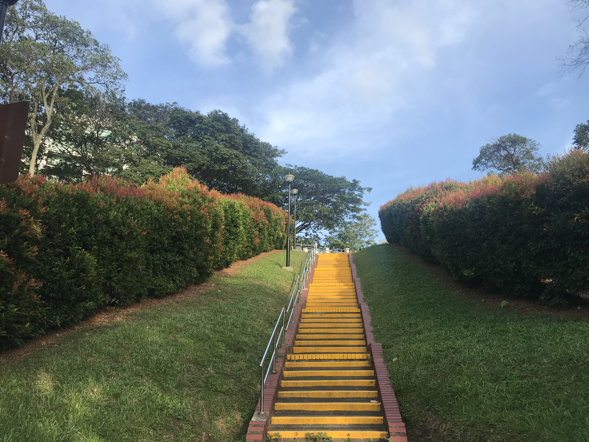

Associate Professor
PhD Supervisor
Center of Statistical Research
School of Statistics
Southwestern University of Finance and Economics
E-mail: xuejunma@suda.edu.cn
Current Research Interests: Statistical machine learning, Statistical manifold, Reliability statistics